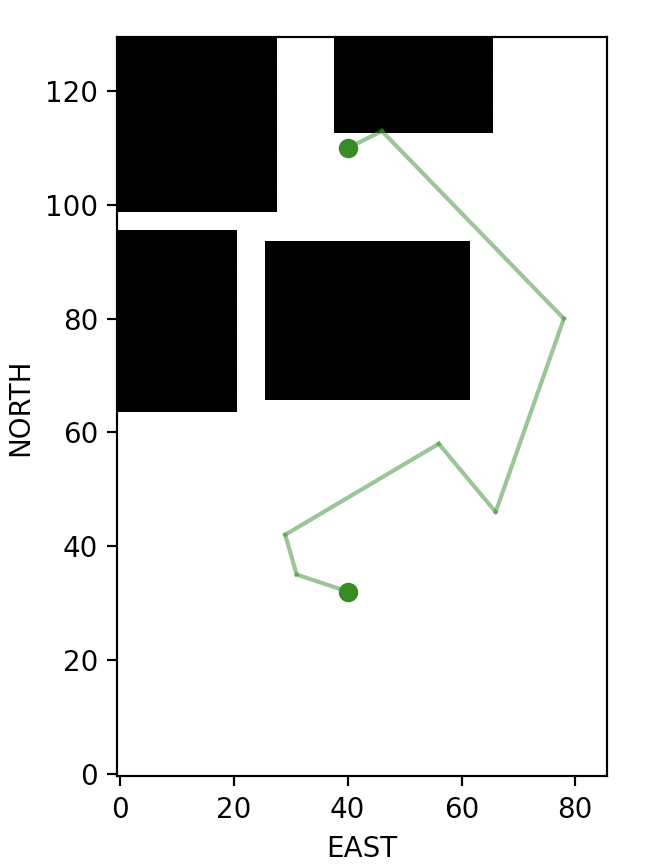
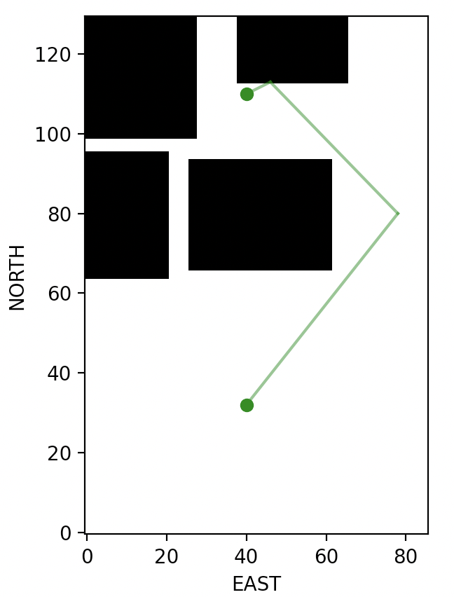

Motion Planning essentially answers the question How to get from point A to point B? given the map of the environment. In this project on Udacity, the drone had to navigate through an urban environment with tall buildings to reach the destination specified as GPS coordinates. You can checkout the Udacity project along with my solution to the project here. In this blog post, we will port the Udacity project to Crazyflie, a micro-UAV that can be safely used indoors. We use local coordinates indoors derived from the flow deck for lateral position (x and y coordinate) and laser range sensor for drone altitude (z coordinate).
We assume that the map of the environment is given to us – this is an assumption to simplify the problem and focus on understanding motion planning ideas. In reality, the map of environment may not be available or even if it’s available, it may not be precise. Some of the obstacles such as furniture, people, or other clutter in the indoor space may not be captured in the map. However, our assumption lets us deal with the problem in a manageable way and learn the basics of motion planning.
Motion Planning terminology
This description only provides an overview of related topics used in this projects and by no means a complete description of Motion Planning techniques. You can get a comprehensive overview of this topic by referring to Principles of Robot Motion: Theory, Algorithms, and Implementations1 and reading through Motion Planning algorithm implementations such as Python Robotics2 and OMPL (Open Motion Planning Library)3.
Representation
We need to represent the surroundings of the UAV in such a way that lets us store and perform queries related to the obstacles in the environment. Further, we need to represent the waypoints of the UAV from the start to the goal location. For a grid representation, waypoints may be a sequence of cells from start to goal location in a discrete space. A graph representation would have nodes representing waypoints with coordinates of each node in a continuous space.
Grids
We can split the environment into grids and build an occupancy map representing various obstacles in the environment. Grids work well when the UAV is confined to a smaller space such as indoor environment but doesn’t scale well if we need to model a large area such as city. In a grid representation, each cell in the grid is either occupied or not occupied by an obstacle. We can find paths from point A to point B by traversing the cells that are not occupied from the starting point to the destination point. In the Udacity motion planning project, we start with a grid representation and later extend the solution to a graph representation for scalability (solution has to scale for navigation over multiple city blocks). When performing motion planning for Crazyflie indoors, a grid based representation should work fine.
Graphs
Graph representations are much more compact than grid representation where each node is a possible waypoint for the UAV. Each node is chosen such that there are no obstacles at the location of the node and along the line segments that connect these nodes. In the Udacity project, an occupancy map of the city is used to sample nodes and edges, and checked for collision with obstacles. You can imaging this kind of look-up, i.e., finding if a node is in free space and line segments connecting these nodes doesn’t cross any obstacles is quite compute intensive since there may be thousands of obstacles to process. You need to store the lateral span of an obstacle such as a building and it’s height and quickly able to answer the question if a node represented by coordinates \((x_{1}, y_{1}, z_{1})\) is away from obstacles (some buffer is introduced for accommodating the UAV size and additional safety measure, e.g., 5 meters). This project exemplifies the role of k-d trees in a real-world context, a data structure that is very much suitable for representation and query of points/lines and their intersection with obstacles.
There may be too many waypoints regardless of your representation (grid or graph), i.e., for a UAV too many waypoints means too many stop and starts and this results in a jerky motion. Instead, we need smooth flying of the UAV – this is possible if we can create a high-level “summary” of the too many waypoints we have. We use Bresenham algorithm to condense waypoints to minimal points enabling UAV to fly without unnecessary stopping at extraneous waypoints.
Probabilistic Road Map (PRM) scales well for large spaces compared to approaches such as Voronoi graphs or grid based approaches. However, with the FCND simulator, I had difficulty using PRM so ended up using Voronoi graphs and Bresenham for refinements of paths to come up with the final flight paths for the UAV. When we port this code to Crazyflie, we will use PRM instead of Voronoi graphs as it’s a more practical and scalable approach.
Search
There may be multiple paths an UAV can choose to go from point A to point B. Planning is posed as a search problem over Grids or a Graph. A popular approach to search paths is \(A^{*}\) search which takes initial position, the goal position, possible actions at each step, and a heuristic function as inputs, and returns the optimal path which can be used by the drone for its navigation.
Simulator to Crazyflie
Following changes have to be made to the project in addition to steps in the backyard flyer project:
- Implement Probabilistic Road Map (PRM) to find best course of waypoints to reach the goal location from a start location. Here is an example implementation for your reference. Once implemented, we initialize all waypoints for the Crazyflie as shown here:
self.all_waypoints = self.plan_path_graph()- Initialize the grid by setting the following variables before constructing the PRM. These are the settings I had to use for the indoor space I used for flying Crazyflie. Please ensure you plugin the values that are appropriate for your case.
TARGET_ALTITUDEandSAFETY_DISTANCEare your choice expressed in inches (since my measuring tape only had inches). If you have a measuring tape that can measure in centimeters, you can as well use meters for all measurements.GRID_NORTH_SIZEandGRID_EAST_SIZEare the total size of the indoor space used to fly the UAV.NUMBER_OF_NODESis the number of nodes to be sampled andOUTDEGREEis the number of edges that are going out from a node.
# convert meters to inches
TARGET_ALTITUDE = 0.3 / 0.0254
SAFETY_DISTANCE = 0.25 / 0.0254
GRID_NORTH_SIZE = 130
GRID_EAST_SIZE = 86
NUMBER_OF_NODES = 200
OUTDEGREE = 4
grid, G = construct_road_map_crazyflie(data, GRID_NORTH_SIZE, GRID_EAST_SIZE, TARGET_ALTITUDE, SAFETY_DISTANCE, NUMBER_OF_NODES, OUTDEGREE)- Initialize the start and end location using a measuring tape – the current scale is in inches. Note that the coordinates are in (NORTH, EAST, ALTITUDE) since this the format used by Crazyflie.
# set start and goal locations
grid_start = (32, 40, 0)
grid_goal = (110, 40, 0)Here is the complete code for motion planning with Crazyflie and the utility methods for planning. Here are examples of paths generated from PRM for an obstacle course you will see in the next section. You can run PRM module separately even if you don’t have the Crazylie using the following command
python planning_utils.pyYou will see PRMs generate a path first and when you close the visualization, the waypoints from PRM are reduced using Bresenham to generate realistic waypoints that the Crazyflie can follow.


Crazyflie in action
Once the map is initialized along with start and destination locations in crazyflie_motion_planning.py, you can invoke the motion planning and execution script to make the Crazyflie navigate through the obstacle course to reach and land at the desired location.
python crazyflie_motion_planning.py
Conclusion
Porting Motion Planning project to Crazyflie required additional steps such as creation of a 3D map of the environment populated with approximate location of obstacles, choosing coordinate system units, adjusting the altitude appropriate for indoor flight, and visualizing the waypoints for clarity on the Crazyflie behavior.
Building such a map manually is not practical for unknown cluttered environments. Even if we have such a map, it’s probably going to get stale pretty quickly in such a dynamic environment. Further, there may be non-static obstacles such as people moving around which are never captured in a static map. All these challenges motivates us to pursue approaches to create maps of unknown cluttered environments using various sensors on the UAV. Such a dynamic map creation would enable UAVs to truly explore an unknown environment.
References
Footnotes
Choset, H, Lynch, KM, Hutchinson, S, Kantor, G, Burgard, W, Kavraki, L & Thrun, S 2005, Principles of Robot Motion: Theory, Algorithms, and Implementations. MIT Press.↩︎